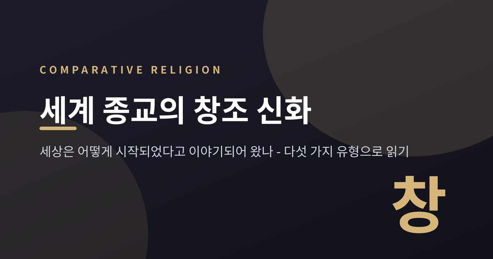
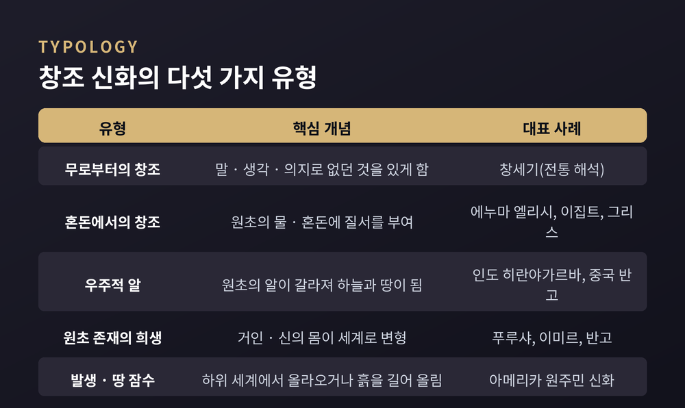
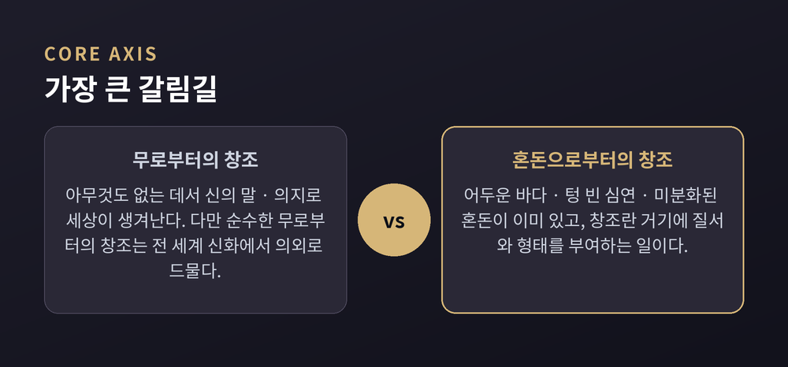
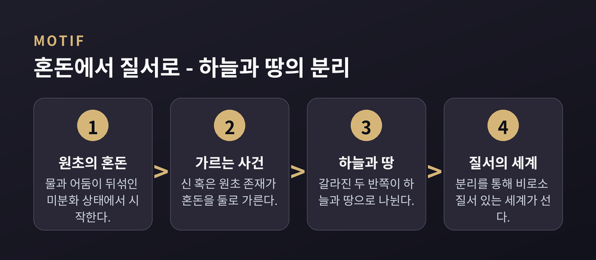

세상은 어떻게 시작되었을까요. 인류는 문명마다 이 물음에 저마다의 이야기로 답해 왔습니다. 오늘은 세계 여러 종교와 신화 속 창조 이야기를, 비교종교학의 눈으로 나란히 놓고 살펴보려 합니다.
미리 한 가지만 짚어 두겠습니다. 이 글은 어느 창조 신화가 사실이거나 더 옳다고 가리려는 글이 아닙니다. 서로 다른 문명이 같은 물음 앞에서 어떤 상상의 언어를 골랐는지, 그 구조를 견주어 보는 것이 목적입니다.
흥미로운 사실이 하나 있습니다. 서로 멀리 떨어진 문명의 창조 이야기들이, 자세히 뜯어보면 몇 가지 비슷한 뼈대로 묶인다는 점입니다.
비교신화학에서는 흔히 다섯에서 여섯 가지 유형을 이야기합니다. 무(無)로부터의 창조, 혼돈이나 물에서의 창조, 우주적 알에서의 창조, 원초적 존재의 희생을 통한 창조, 그리고 여러 세계를 거쳐 올라오는 발생형입니다.
여기에 잠수하는 존재가 원초의 바다 밑에서 진흙을 길어 올려 땅을 만드는 '땅 잠수형'을 더하기도 합니다. 아메리카 원주민의 여러 신화가 발생형과 땅 잠수형을 보여 줍니다. 학자 마르타 웨이글은 이 분류를 더 세분해 아홉 가지 주제로 넓히기도 했습니다.
한 문명이 다른 문명을 베낀 것이 아닙니다. 인간의 상상력이 서로 독립적으로도 닮은 그림에 이르렀다는 것. 비교신화학이 주목하는 지점이 바로 여기입니다.

가장 큰 갈림길은 여기서 갈립니다. 세상이 '아무것도 없는 데서' 생겨났다고 보느냐, 아니면 '이미 있던 혼돈에 질서가 부여되었다'고 보느냐.
전자를 흔히 '무로부터의 창조'라 부릅니다. 신의 생각이나 말, 의지로 없던 것을 있게 한다는 그림입니다. 그런데 종교학자들은 한 가지를 덧붙입니다. 순수한 무로부터의 창조는 전 세계 신화에서 생각보다 드물다는 점입니다.
대부분의 이야기는 무엇인가에서 시작됩니다. 어두운 바다, 텅 빈 심연, 미분화된 혼돈. 질서 이전의 '무엇'이 이미 놓여 있고, 창조란 거기에 형태를 부여하는 일로 그려집니다.
히브리 창세기 1장이 대표적인 사례이자 오랜 논쟁의 자리입니다. 하나님이 엿새 동안 "빛이 있으라" 하는 말씀으로 질서를 세웁니다. 이 첫머리를 두고 학계의 해석은 갈립니다.
전통적 입장은 이를 무로부터의 창조로 읽습니다. 반면 다수의 현대 성서학자는, 본문이 이미 있던 '혼돈하고 공허함(토후 바보후)'과 '깊음(테홈)'에 질서를 부여하는 이야기라고 봅니다. 어느 쪽으로도 단정하지 않고, 두 해석이 나란히 있다는 사실만 적어 둡니다.

혼돈에서의 창조를 가장 선명하게 보여 주는 이야기가 메소포타미아의 에누마 엘리시입니다.
태초에 담수의 신 압수와 염수의 여신 티아마트가 뒤섞여 있습니다. 여기서 여러 신이 태어나고, 젊은 신 마르두크가 원초의 여신 티아마트를 죽입니다. 그리고 그 몸을 둘로 갈라 반으로는 하늘을, 반으로는 땅을 만듭니다. 창조가 하나의 격렬한 사건으로 그려지는 셈입니다.
이집트도 물에서 시작합니다. 원초의 물 '눈(Nun)' 속에서 신 아툼이 스스로를 창조하고, 원초의 물 위로 기둥처럼 솟아오릅니다. 그리고 자기 몸에서 공기의 신과 습기의 여신을 낳습니다.
그리스의 헤시오도스는 『신통기』에서 맨 처음에 '카오스'가 있었다고 노래합니다. 여기서 카오스는 무질서한 혼란이라기보다, 입을 벌린 텅 빈 틈에 가깝습니다. 거기서 대지 가이아와 끌림의 힘 에로스가 나타나고, 가이아가 하늘 우라노스를 낳아 짝을 이룹니다.
메소포타미아의 티아마트를 가르는 장면, 그리스에서 땅과 하늘이 짝지어 갈라지는 장면. 하늘과 땅을 나누는 이 '분리'의 모티프는 여러 문명에서 되풀이됩니다. 뒤섞여 있던 것이 갈라지면서 비로소 질서가 생긴다는 감각. 이는 혼돈에서 출발하는 창조 이야기가 즐겨 쓰는 문법입니다.

인도와 중국은 또 다른 그림을 보여 줍니다.
인도의 리그베다는 한 권 안에서도 서로 다른 창조관을 품고 있습니다. '히란야가르바'는 황금 알이 원초의 물 위에 떠 있다가 둘로 갈라져 하늘과 땅이 되었다고 노래합니다. 우주적 알의 이야기입니다.
같은 리그베다의 '나사디야 수크타'는 결이 사뭇 다릅니다. "그때 존재도 없었고 비존재도 없었다"로 시작해, 세상이 언제 어떻게 생겼는지 묻되 답을 주지 않습니다. 심지어 가장 높은 신조차 그 답을 알지 못할지 모른다고 말합니다. 확신이 아니라 물음으로 닫는, 드물게 겸허한 창조 이야기입니다.
중국의 반고 신화는 우주적 알과 희생을 함께 품습니다. 혼돈을 담은 거대한 알 속에서 반고가 자라나, 알을 깨고 나와 하늘과 땅을 가릅니다. 그리고 반고가 죽자 그 몸이 세계로 변합니다. 두 눈은 해와 달이 되고, 숨결은 바람이, 피는 강이 됩니다.
몸이 세계가 되는 이 그림은 놀랍도록 널리 퍼져 있습니다. 인도의 원초적 인간 푸루샤는 신들의 제사에서 제물이 되어 그 몸에서 세계가 나옵니다. 북유럽의 거인 이미르는 신들에게 해체되어 살은 대지, 뼈는 산, 두개골은 하늘이 됩니다.
세 신화는 서로 만난 적이 없습니다. 그런데도 '우주는 하나의 거대한 몸'이라는 은유에 나란히 이르렀습니다.
이렇게 놓고 보면, 흩어진 신화들 사이로 몇 가닥의 공통된 무늬가 지나갑니다.
많은 이야기가 원초의 물이나 혼돈에서 출발합니다. 그 혼돈을 가르는 '분리'로 하늘과 땅이 생깁니다. 어떤 이야기에서는 원초의 존재가 희생되어 그 몸이 세계가 됩니다. 또 어떤 이야기에서는 말이나 의지가 세상을 불러냅니다.
물론 차이도 뚜렷합니다. 에누마 엘리시는 여러 신의 전쟁이지만 창세기는 한 분의 말씀입니다. 어떤 신화는 창조를 격렬한 사건으로, 어떤 신화는 고요한 발생으로 그립니다. 히브리어 '테홈(깊음)'과 바빌로니아 여신 '티아마트'가 어원으로 이어진다는 지적처럼, 이웃한 문명끼리는 서로의 이야기를 알고 대화하듯 쓰기도 했습니다. 그러나 인도와 북유럽처럼 만난 적 없는 문명이 같은 은유에 이른 경우도 있습니다.
닮음이 반드시 영향을 뜻하지는 않습니다. 어떤 물음은 문명을 가리지 않고 비슷한 상상을 불러오는 듯합니다.
정리하면 이렇습니다.
창조 신화는 '세상은 어떻게 시작되었나'라는 하나의 물음에, 문명마다 다른 언어로 답한 기록입니다. 어느 답이 옳은지를 겨루는 자리가 아니라, 인간이 미지 앞에서 어떤 상상을 길어 올렸는지를 보여 주는 자리입니다.
리그베다의 한 구절이 오래 남습니다. "가장 높은 이조차, 어쩌면 알지 못할 것이다."
세상의 시작을 다 안다고 말하는 이야기보다, 끝내 물음으로 남겨 둔 이야기가 더 깊게 다가오는 것은 왜일까요.